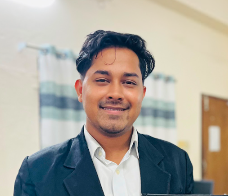

Agentic AI / GenAI Engineer who designs and ships production multi-agent systems — orchestrating specialized LLM agents with shared state, tool-use, and autonomous task planning across cybersecurity, clinical decision support, recruitment, and investment research. Background spans RAG & hybrid retrieval, QLoRA fine-tuning, real-time voice agents, and full-stack web development.
Lightweight orchestration layer coordinating specialized agents with shared state, task queues, and retry/fallback logic; standardized function-calling schemas to reduce malformed tool outputs.
Agent that plans and executes multi-step web tasks (form filling, data extraction) via an LLM planner and browser automation, with self-correction logic to retry failed steps on an adjusted plan.
Fine-tuned LLMs served behind a FastAPI inference service with request batching and Redis response caching; containerized with health checks and structured logging for production monitoring.
Training pipeline with MLflow experiment tracking for hyperparameters, metrics, and model artifacts; automated dataset versioning and reproducible runs across fine-tuning iterations.
Evaluation pipeline for RAG systems measuring retrieval precision/recall and generation faithfulness via LLM-as-judge scoring, with prompt regression checks to catch hallucination before deployment.
Document Q&A app that ingests PDFs, chunks and embeds them, and answers questions with cited source passages via RAG; adds conversation memory and query rewriting for multi-turn follow-ups.
EDA on customer transaction data to identify churn drivers via statistical testing and feature correlation; compared logistic regression, random forest, and XGBoost, tuned and evaluated on precision/recall/ROC-AUC.
ETL pipeline cleaning and aggregating raw sales data into a structured schema, surfaced through an interactive Streamlit dashboard with automated weekly refresh.
Controlled ablation study comparing QLoRA, standard LoRA, and full fine-tuning across rank, quantization, and dataset-size variables; reported accuracy vs. GPU memory vs. training-time trade-offs with significance testing.
Evaluation benchmark for low-resource dialect translation combining automatic metrics (BLEU, chrF) with a structured human evaluation protocol; documented annotation guidelines and inter-annotator agreement.
Interactive sales performance dashboard built with pivot tables and dynamic visualizations during industrial training.